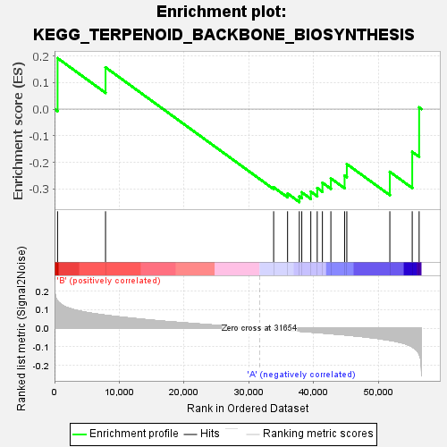
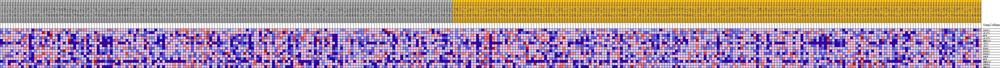
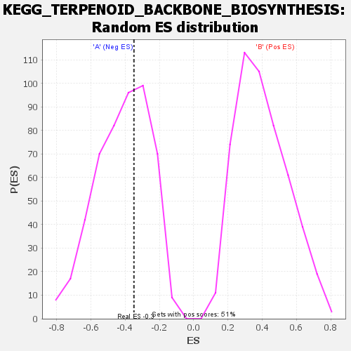

| | | Dataset | my.my.cls#B_versus_A.my.cls#B_versus_A_repos |
| Phenotype | my.cls#B_versus_A_repos |
| Upregulated in class | A |
| GeneSet | KEGG_TERPENOID_BACKBONE_BIOSYNTHESIS |
| Enrichment Score (ES) | -0.3494879 |
| Normalized Enrichment Score (NES) | -0.8379449 |
| Nominal p-value | 0.6186613 |
| FDR q-value | 0.6899763 |
| FWER p-Value | 1.0 |
Table: GSEA Results Summary

Fig 1: Enrichment plot: KEGG_TERPENOID_BACKBONE_BIOSYNTHESIS
Profile of the Running ES Score & Positions of GeneSet Members on the Rank Ordered List
| SYMBOL | TITLE | RANK IN GENE LIST | RANK METRIC SCORE | RUNNING ES | CORE ENRICHMENT | | 1 | GGPS1 | na | 468 | 0.147 | 0.1915 | No |
| 2 | ACAT1 | na | 7870 | 0.071 | 0.1570 | No |
| 3 | MVK | na | 33810 | -0.005 | -0.2941 | No |
| 4 | ACAT2 | na | 35957 | -0.011 | -0.3175 | No |
| 5 | HMGCS1 | na | 37770 | -0.015 | -0.3286 | Yes |
| 6 | IDI2 | na | 38149 | -0.016 | -0.3131 | Yes |
| 7 | IDI1 | na | 39541 | -0.020 | -0.3102 | Yes |
| 8 | FDPS | na | 40531 | -0.023 | -0.2967 | Yes |
| 9 | PDSS2 | na | 41332 | -0.025 | -0.2769 | Yes |
| 10 | PDSS1 | na | 42639 | -0.029 | -0.2606 | Yes |
| 11 | PMVK | na | 44753 | -0.035 | -0.2500 | Yes |
| 12 | MVD | na | 45098 | -0.036 | -0.2066 | Yes |
| 13 | HMGCS2 | na | 51736 | -0.065 | -0.2359 | Yes |
| 14 | DHDDS | na | 55191 | -0.100 | -0.1607 | Yes |
| 15 | HMGCR | na | 56256 | -0.137 | 0.0064 | Yes |
Table: GSEA details [plain text format]

Fig 2: KEGG_TERPENOID_BACKBONE_BIOSYNTHESIS
Blue-Pink O' Gram in the Space of the Analyzed GeneSet

Fig 3: KEGG_TERPENOID_BACKBONE_BIOSYNTHESIS: Random ES distribution
Gene set null distribution of ES for KEGG_TERPENOID_BACKBONE_BIOSYNTHESIS